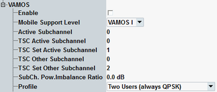

The "VAMOS" settings configure voice services over adaptive multi-user channels on one slot (VAMOS) for circuit switched connections.

Activates/deactivates voice services over adaptive multi-user channels on one slot (VAMOS).
For background information, see "VAMOS".
Option R&S CMW-KS203 required.
Remote command:Selects the VAMOS support level of the mobile. The support levels I and II are defined in standard 3GPP TS 45.001, clause 13.2. VAMOS II mobiles must fulfill additional performance requirements and use a modified mapping of logical channels onto the physical channel. The requirements are given in table 1a of 3GPP TS 45.002 (also referred to as "shifted SACCH").
Automatic setting uses the highest level reported in the MC capabilities.
Option R&S CMW-KS203 required.
Remote command:Selects the VAMOS subchannel to be used for the DUT. The other subchannel is used for the virtual second VAMOS user.
Option R&S CMW-KS203 required.
Remote command:Select the training sequence to be used for the DUT. The training sequence is identified via the training sequence code (TSC) set and the TSC within this set.
Option R&S CMW-KS203 required.
Remote command:Select the training sequence to be used for the virtual second VAMOS user. The training sequence is identified via the TSC set and the TSC within this set. For a 3GPP compliant configuration, select different TSC sets for the DUT and the virtual user.
Option R&S CMW-KS203 required.
Remote command:The subchannel power imbalance ratio (SCPIR) defines the power of subchannel 0 relative to the power of subchannel 1.
Option R&S CMW-KS203 required.
Remote command:- "Single User (always GMSK)": There is no second VAMOS user at all. The downlink signal contains speech frames and signaling data for the DUT only. GMSK modulation is used.
- "Two Users (always QPSK)": The downlink signal contains speech frames and signaling data for both users. AQPSK modulation is applied.
- "Two Users (2nd User in DTX Mode)": The downlink signal contains speech frames for the DUT only. For the virtual user DTX is transmitted. Depending on the TDMA frame number either GMSK modulation (virtual user transmits nothing) or AQPSK modulation (virtual user transmits SID or SACCH) is applied.
For more details, refer to "VAMOS".
Option R&S CMW-KS203 required.
Remote command:Press this button after you have configured all VAMOS parameters as desired. VAMOS parameter changes are not applied automatically, because an intermediate inconsistent parameter combination could cause the loss of an established CS connection. If you close the configuration dialog without pressing "Apply", the changes are lost.
Option R&S CMW-KS203 required.
Remote command:n/a, changes via remote command take effect immediately.